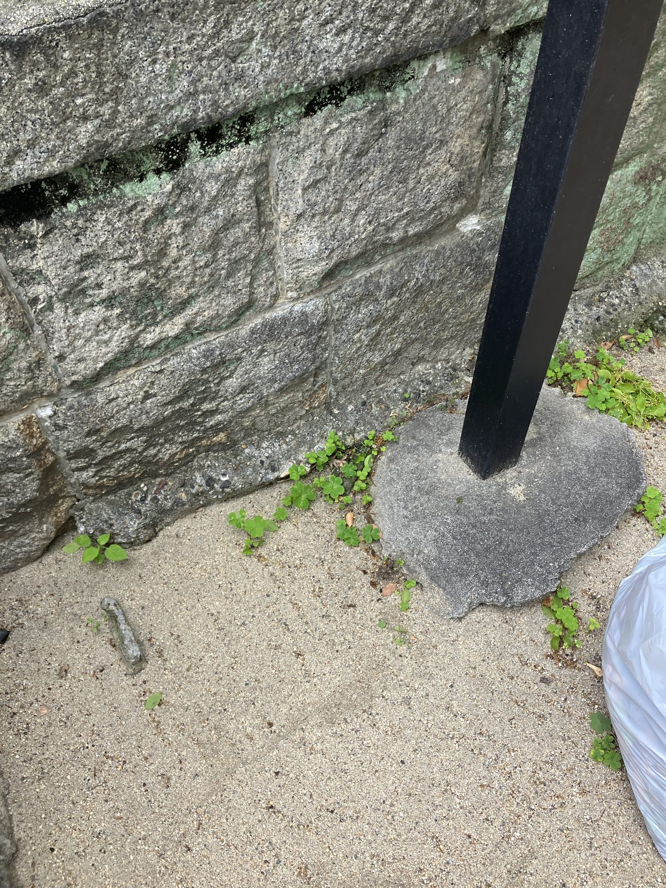
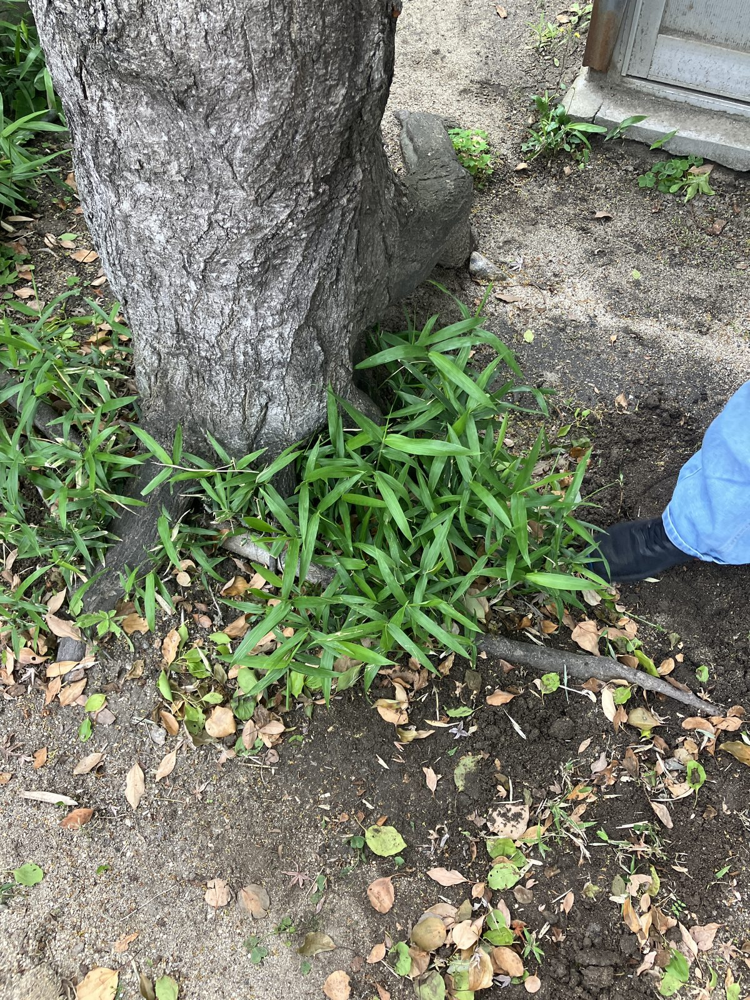
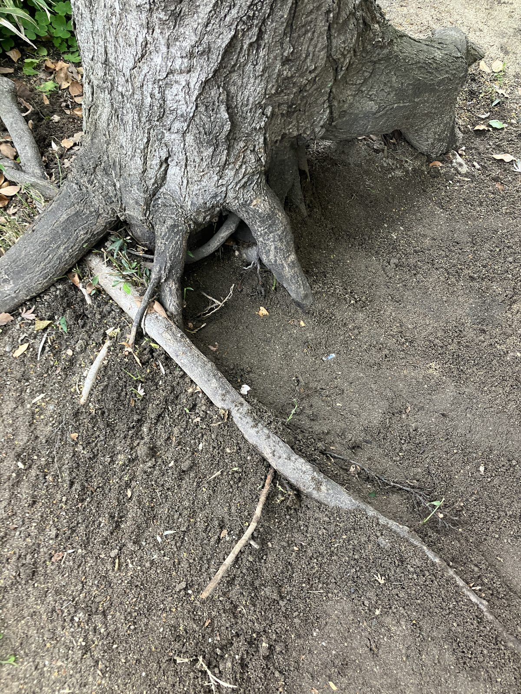
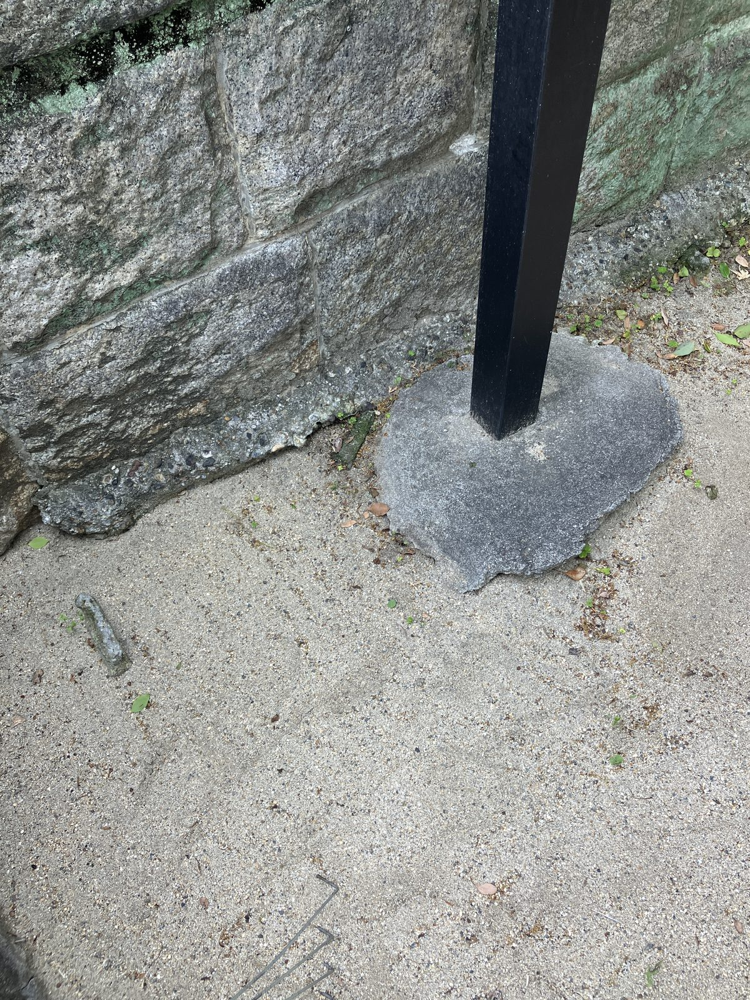

本日は町会の清掃活動として、木のまわりや歩道付近の雑草抜きを行いました。
写真のように、木の根元にはしっかりと雑草が根を張っており、見た目以上に手ごわい作業でした。特に地中深くまで伸びた根や、木の根と絡み合っている部分は、丁寧に手作業で一本一本取り除いていきました。




作業後は土もきれいに整い、見た目もすっきり。気持ちよく歩ける環境に戻りました。
地味で地道な作業ですが、地域の景観や安全を守る大切な取り組みだと、改めて実感した一日でした。